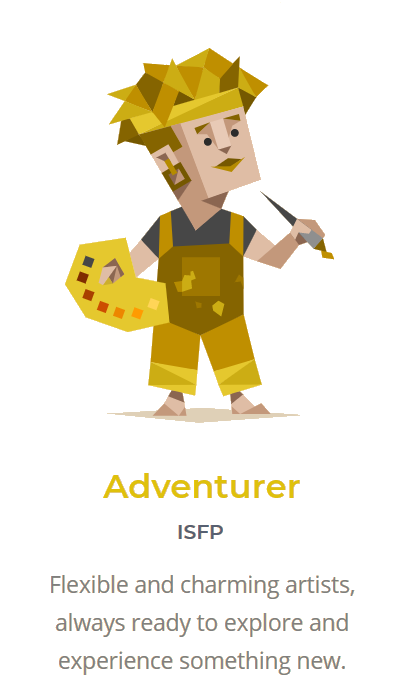
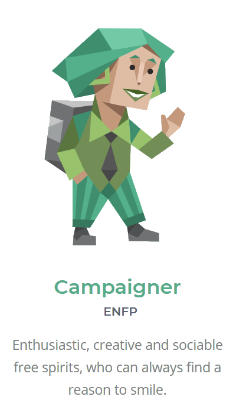
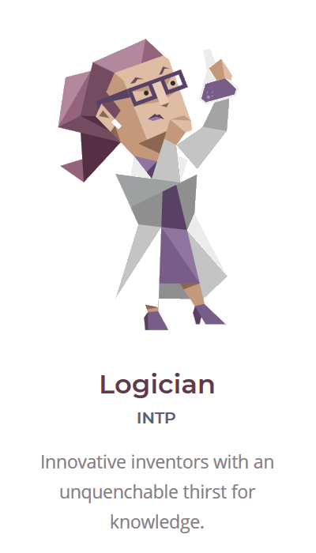
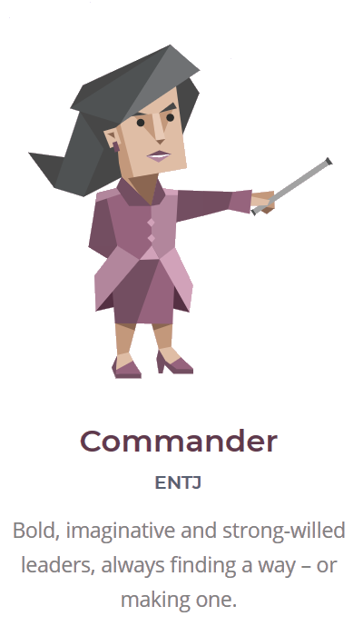
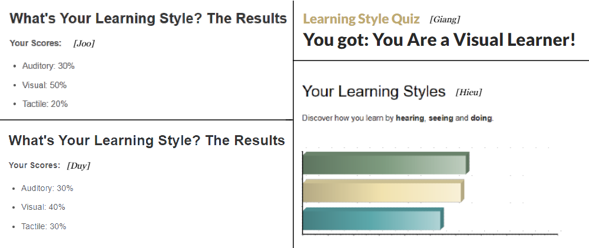
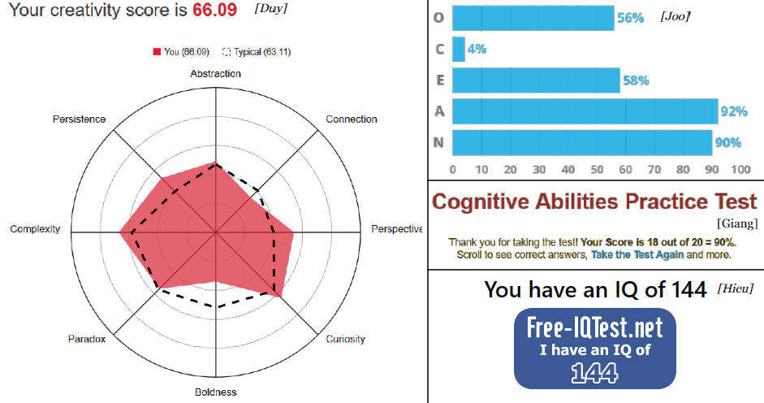
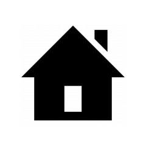
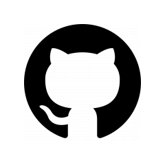
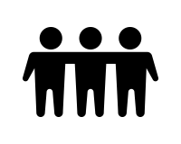
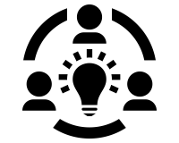

Ⅰ. Team Profile
" Welcome To Our Profile ! "

JOO
JEONG-HYEON
Software developer
- Nationality : Korea
- Spoken Languages :
Korean(native), English
- MBTI Type : ISFP

PHAM TRAN
TRUNG HIEU
Web developer
-Nationality : Vietnamese
-Spoken Languages :
Vietnamese(native), English
- MBTI Type : ENFP

NGUYEN THI
QUYNH GIANG
UI/UX/CX Designer
- Nationality : Vietnamese
- Spoken Languages :
Vietnamese(native), English
- MBTI Type : INTP

NGUYEN HA
MINH DUY
Full-stack
- Nationality : Vietnamese
- Spoken Languages :
Vietnamese(native), English
- MBTI Type : ENTJ
# MBTI Test Results
 
 
# Learning Test Results

#Different tests Results

# Detail
Joo Jeonghyeon
"Please call me Joo for easy pronunciation!"
# RMIT Student ID: s3865746
# Nationality: Korea
# Spoken Languages: Korean(native), English
# Education
- I spent 1 years for EU course
- New to IT field !
# Personal hobbies
- listening to music
- playing the piano and ukulele
- taking a beautiful scenery picture
# Why do I want to be a Software Developer
: My ideal job is software developer. Because I’ve been interested in application developing and wondered about the discipline of developing website, I’m really satisfied with learning programming deeply. Even though I’m not special to programming, I have confidence that I won’t give up to acquire IT knowledge and I will keep updating new information about developing, I want to be a Software developer.
Nguyen Thi Quynh Giang
"That's a mouthful so friends call me Nina for short."
# RMIT Student ID: s3866617
# Nationality: Vietnamese
# Spoken Languages: Vietnamese(native), English (fluent).
# Education:
- 1 year spent in HCMIU studying Biotechnology(dropped)
- IT freshmam at RMIT
- Tester intern at Skedulo Vietnam (current)
# Personal hobbies:
Guitar player (classic music only), Former competitive swimmmer,
reader, and a Technology enthusiast.
+ There is another unbelievable fun fact that I love dogs and currently have 6 of them at home :)
# Why do I want to be a Web Developer: My desire job title has been change for so many times, naturally I assume myself as a visual learner and refuse looking at Back-end. However, I experience doing some backend things using NodeJs for work and for the project that we are working on as well.Obviously, Backend is more challenging yet truly intriguing. I found that I will appreciate the product more if I do both Back-end and Front-end. Or at least undertand the product as a whole if I'm only specilised on one thing.
Nguyen Ha Minh Duy
"Please call me Daniel."
# RMIT Student ID: s3852307
# Nationality: Vietnamese
# Spoken Languages: Vietnamese(native), English
# Education
- 3 years study in New Zealand
- Fresh man in RMIT
- Elected to University of Technology in New Zealand
# Personal hobbies
- listening to music
- Game lover
- Hypebeast
# Why do I want to be a Full-stack Developer: As a person who follows perfection, I would love to do my jobs and things as perfect as possible so I think it will be best for me to follow one of the hardest jobs on the field: Full-stack developer. Besides the high opportunity for employment and a high salary, a successful full-stack developer will have to master a lot of vital skillsets from programming languages to a diverse growth option. Although it will be a challenging path for me to master it, with efforts and time, I will be able to follow my dream.
Pham Tran Trung Hieu
# RMIT Student ID: s3836565
# Nationality: Vietnamese
# Spoken Languages: Vietnamese(native), English
# Education
- Went to Vietnam Australia International School
& Saigon International College
- Freshman in RMIT
# Personal hobbies
- New technologies
- Video games
# Why do I want to be a: Software Developer : The main reason I want to be a software developer because I believe that if I have a lot of knowledge about developing software in particular and Information Technology in general. It would help improve myself and, later on, more comfortable for me to implement my technology ideas.
II . Tools

↑ Our Website

↑ Our Git Repository
[ Comments ]
# Comment on the trail

1.
2.
3.

4. SOME INSIGHTS ABOUT OUR TRAFFIC ON GITHUB:
[ Individual ]
Joo : Hieu : Giang : Duy :
Ⅳ .
Ⅴ . Project
Project name: PostmanTech
An informative site with a nice twist
▽ Please click on the images below! ▽
IV. Feedback
0. Intro
This final reflection is the extraction of the weekly reflective reports that we took turn to write. So even though the position, responsibility, work allocation are different from member to member, we decided to let each group member represent the whole group to evaluate the general workflow. Therefore, the below comments would be considered really objective, as they are not based on a specific leader.
1. The good
Up till the moment, we have been working as a team for almost a semester. Looking at the whole picture, we could see that despite the fact that we started with very different backgrounds, to some degrees, the team broke many barriers to collaborate nicely. Since we did talk about how the distinctive characteristics among teammates brought fresh new ideas and information sources to the group, let’s not repeat that obvious upside in this reflection. Otherwise, there have been many things which display we are able to work as an effective team. Which are discovered as we worked alongside each other and resolved obstacles that we may have faced:
- Team members are all eager to learn new things, everytime a new idea/initiative proposed by a member or a consultant. We did not have any mental difficulties of picking up new knowledge for the sake of solving the roadblocks.
- Team members are open to feedbacks and suggestions for improvement. Thereby, communications are straightforward and direct. Each member is committed to improving their own weaknesses as well as contributing to helping others with theirs.
- The team in general can adapt to changes and do not take it as obstacles but opportunities to learn.
- Meetups are scheduled frequently, which helped us make the most out of face to face communications. On the other hand, online communication is lively as well, since we talked not only about the assignment itself but also individual’s experience on many other aspects of the IT field.
- We have some good practice on the collaboration via Github, instead of making too many unnessary and draft branches, we are implementing Feature Branch style into our collaboration, attemmting to make the working tree cleaner.
2.. The bad
In general, the negative aspects of the collaboration are easily explained, Personally, these are common mistakes that newbies usually bumped into when working in group. These are some insights that we can list out, they covered both objective and subjective reasons:
- Time management among the group: even though we did not miss any deadline, we got overwhelmed with the concentration of assessments by the end of the semester. And sometimes, it is not easy to find the vacancy of that satisfies all members’ schedules.
- Confusion on the assignment’s requirements: this one can be the most controversial, since it seems to be both objective and subjective at the same time. We found some some parts of the assignments really repetitive and does deteriorate the productivity of the group as well, since we had to have communication on useless things rather than working on the project itself. Communication clarifies the work but over-communication on one topic is the opposite of efficiency. And we gotta spent too much time seeking clarification that should have been stated explicitly on the assignment requirements.
- Failed in achieving the desired workflow:We aimed to achieve the workflow of the Agile Methodology as we said earlier. However, we have not been successful, if only we had been able to apply that(to some degrees) into the group process, there would have been more achievements with flying colors.
- Waste/work-not-done existence:More things can be maximise that could have saved us time for our own personal development/life/self-learning. So work/life balance could be better so that we will have time for our loved ones/personal goals
3. The Fix
For the future, we will have to re-define our group’s goal and personal goals in order to achieve better output. There are possibilities that we will feedback week by week on each other’s work on the allocation and help point out strengths and weaknesses. Therefore we can amplify the goods and avoid/reduce. Specifically, since we are doing some real coding for the web application project, we may use tracking tools like Jira Software and Confluence for task/sub-tasks and bugs log, this, if used properly, will make the workflow much cleaner.
Ⅶ. Group Reflection
Individual Feedback
# Myself
In this project, my main position is a front-end developer. Actually, because it is quite different from HTML, it was hard to do. So I think my work is insufficient. However, I tried to do my best. And as a groupmate, I think I need to reply much faster. Because sometimes I didn't reply immediately to my group chat. So I need to develop this shortcoming.
# Giang
Giang is an awesome woman who has great leadership. When Our group should set the basic line of our project, she tried to make an appointment, managing our schedule. And she organized what we should do by priority. Sometimes, when our group needed to interact much, she attempted to conversate with our group mate. She is a good leader.
# Hieu
Hieu is a creative man who has bright ideas. Actually this project idea is provided by Hieu. When he presented his idea to us, he explained concretely to allow other members to understand easier. And when we have arguments about our project, he always listens to others' opinions in a neutral position. So it softens our team's mood.
# Duy
Duy is a very intelligent and helpful man. He always replied to the leader's message quickly and helped the organizing group work actively. So that conversation in our group could proceed quickly and smoothly. And he was always cooperative with our team so that our project was operated literally as a ‘group’ assignment.
# Myself
Eventually, I have not not met all of the expectations of a “good leader” that I set for myself from the start. However, I could say that I have done some nice jobs introducing new knowledge(web service, ReactJS, etc) and provoking others to come up with their own solutions. Yet, perhaps it would have been really different if I can spend time working on the actual work with other members. In other words, I should have prioritised the school work much more than I did, yet I appreciate the knowledge gained from my internship, doing Automation testing and Web development, it help me understand everything at the system level. Hence, I could apply it to broad spectrum of the project.
# Joo
Same as my previous feedback, Joo is a really smart girl. Who as well truly love information technology and is not chasing after the “trend”, unlike many others who do and get burned out. That is indeed the most positive thing about Joo, and she used her intelligence to apply on almost every aspects (from technical to theoretical)of the assignments. It is obvious that she is ahead of many members in terms of knowledge, integrity and compassion. The weakness of her is communication, sometimes it is not straightforward and under boundaries, being straightforward about the problem is the key value to speed up the process. Other than that, Joo is the best at self-learning from my experience.
# Hieu
From my point of view, let’s discuss upsides first, Hieu is definitely responsible for the work allocated to him and did complete everything based on the deadline. His working style is also professional. Hence, he is the reminder for other to avoid violating the rules, which may lead to mark deduction (in a not really worth-it way). Moreover, I appreciate that Hieu help with validating the work of others, then tell them to resolve/improve their part. Thus lightened the leader’s burden on my shoulder a little bit. However, if there is one constructive advice that I can give Hieu, it would be improving his technical skill since he has the curiosity to do that quickly. I saw him picking up knowledge and understand the logic instantly.
# Duy
There are perhaps too many things to discuss about Duy. First, he is really spontaneous with communication, yet the advantage is not used at its most effectiveness. For example, he would reply to other really quickly, yet the information retention is not high at all, as he seems to forget allocation/ scheduled deadline. Secondly, he is not really patient at self-study + reading documentations (which is a niche essential in the field). To sum up, curiosity is the key solution to all of these downsides, since when you started fooling around with computers enough, it will be a momentum and you would not wanna stop learning more and more.
# Myself
# Joo
I didn't do a lot of tasks with Joo to have complete feedback about her attitude. However, in the last part of the projects, I have some opportunities with her for the presentation. I feel that Joo is a good teammate; she contributes a lot to the projects from different aspects. Also, her interest and the dept understand of technology really help us in the working process.
# Giang
About Giang, She is a reliable and committed leader. She was handling most of the technical parts of the project. Furthermore, she scheduled all the meetings and worked on the deadline, which was essential for us. Besides that, she is always looking for new tech solutions, such as APIs, REACTJS, and Firebase. In the future, if there is an opportunity, I really want to continue working with her.
# Duy
# Myself
In this assignment, my role is a Back-end Developer. This is a role which needs a meticulous and careful step to make the work clean and neat. That why I need to push myself to create and manage the code as perfectly as I could. This is a perfect role for me to improve my shortcoming to contribute to the project.
# Joo
In this assignment, Joo’s role is a front-end developer. And although is different from the last project, she is quickly adapt to the framework and give the project a creative style to the project. But in my opinion, she needs to break her shell of shyness to improve her communication skills. Sometimes it is hard for her to contribute to the team and give her own opinions about the project.
# Giang
Similar to Assignment 2, Giang fulfilled her role. She always covers the frameworks of the assignment to our team to catch up to date. Besides that, she contributes fresh new ideas to our team to create a perfect project as possible. She always gives us the ideal, pushes us to the limit and sometimes very serious about what we have done so far.
# Hieu
Hieu is the one who provides this assignment idea. When he talk about the idea, he explains and give us the clearly path of what we trying to build, that is his strong point. But personally, i think Hieu should update his status frequently to the group and he need to be more dynamic to the team.